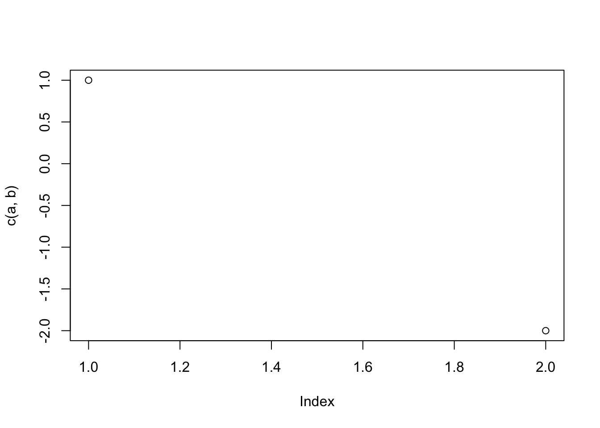
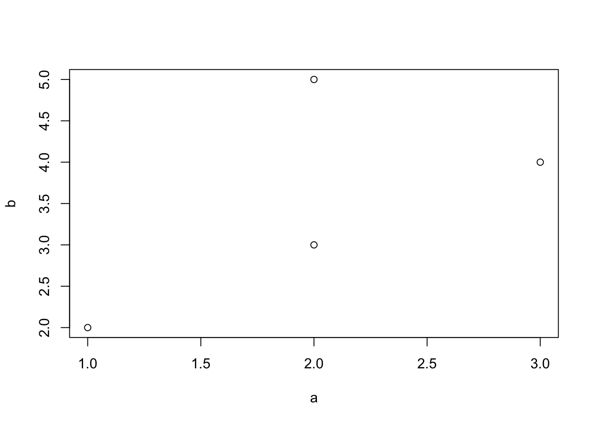

mySimpleFun <- function(a=1,b) {
product <- a*b
return(product)
}Week 1 - Lecture 2
Functions
General structure:
myfun <- function(input, parameters) {
do a thing
do another thing
…
output
}
Write a function
Make a simple function which will multiplies two numbers.
The function will return whatever is called on the last line, or you can explicitly state it with return().
Execution i.e. calling a function
mySimpleFun(b=3)[1] 3mySimpleFun(a=2, b=3)[1] 6mySimpleFun(2, 3)[1] 6Global and local variables
mySimpleFun <- function(a=1,b) {
product <- a*b
return(product)
}What happens with the function if we change variable vol outside it? Nothing! The function has its own local environment.
product <- 5
mySimpleFun(2, 3)[1] 6product[1] 5Function in pseudocode:
START
save the function as mySimpleFun
set the parameter a so it equals 1 and add parameter b
inside the function define the variable product as a product of parameters a and b
return the product as output
close the function
END
binary operator
All functions are beautiful, but not all come in the same shape :)
An operator is a function that takes one or two arguments and can be written without parentheses
function(arg1, arg2)
vs.
arg1 operator arg2
Operator %in% is used to identify if an element belongs to a vector or dataframe.
c(1,4,2,1) %in% c(2,3)[1] FALSE FALSE TRUE FALSEMultiple inputs / vectorisation
mySimpleFun(1:3, 3:5)[1] 3 8 15Flow control: if statement
if(condition is fulfilled) {
do the thing
} else {
do the other thing
}
mySimpleFun <- function(a=1,b) {
if (a < 0) {
a <- (-1)*a
} else {
a <- a
}
product <- a*b
return(product)
}Warnings, errors and messages
You are getting the hang of this, and with an additional pair of hands the work is coming along quickly. But after one calculation, you notice the numbers are fishy. Upon closer inspection, you discover that you input thickness with a decimal dot in the wrong place. To prevent this from happening again and going unnoticed, you add a warning():
mySimpleFun <- function(a=1,b) {
if (a < 0) {
warning("First number is negative! Changing it to positive.")
a <- (-1)*a
} else {
a <- a
}
product <- a*b
return(product)
}If you want the function to stop executing, use break().
message() has similar syntax but different “level of alert”.
Multiple outputs
mySimpleFun <- function(a=1,b) {
if (a < 0) {
warning("First number is negative! Changing it to positive.")
a <- (-1)*a
} else {
a <- a
}
# calculate product
product <- a*b
# make a figure
figure <- plot(c(a,b))
# save a list
res_list <- list("product"=product, "figure"=figure)
# return
return(res_list)
}
## run the fuction
mySimpleFun(b=-2)
$product
[1] -2
$figure
NULLExercise: How would you write this function in pseudocode?
ifelse(test, yes, no) - vectorised
mySimpleFun <- function(a=1,b) {
# make all negatives positive
a <- ifelse(a < 0, -a, a)
# calculate product
product <- a * b
# (plots will only show the last one in a loop, so you usually don’t do this inside)
plot(a, b) # e.g. scatter plot
list(product = product)
}
mySimpleFun(a= c(2,3,2,-1), b=c(3,4,5,2))
$product
[1] 6 12 10 2Try to change ‘list’ with ‘c’ and see what happens. You have to put multiple outputs together as a list, otherwise it doesn’t work properly!
Looping in R
for(each value in sequence) {
do the thing
}
for(i in 1:5) {
print("bla")
}[1] "bla"
[1] "bla"
[1] "bla"
[1] "bla"
[1] "bla"while(condition is true) {
do the thing
}
repeat {
the thing
if(condition is true) { break }
}
It’s NEVER a time for a loop in R. Instead, there’s the apply() family of functions:
Apply family of functions
lapply():
lapply(iris[, 1:4], sum) # preforms a function over each list element$Sepal.Length
[1] 876.5
$Sepal.Width
[1] 458.6
$Petal.Length
[1] 563.7
$Petal.Width
[1] 179.9class(lapply(iris[, 1:4], sum)) # returns a list[1] "list"Notice the three dots (ellipsis) in function description: lapply(X, FUN, ...)
Access list entries explicitly by using function(x):
lapply(iris[, 1:4], function(x) sqrt(x[20:30]))$Sepal.Length
[1] 2.258318 2.323790 2.258318 2.144761 2.258318 2.190890 2.236068 2.236068
[9] 2.280351 2.280351 2.167948
$Sepal.Width
[1] 1.949359 1.843909 1.923538 1.897367 1.816590 1.843909 1.732051 1.843909
[9] 1.870829 1.843909 1.788854
$Petal.Length
[1] 1.224745 1.303840 1.224745 1.000000 1.303840 1.378405 1.264911 1.264911
[9] 1.224745 1.183216 1.264911
$Petal.Width
[1] 0.5477226 0.4472136 0.6324555 0.4472136 0.7071068 0.4472136 0.4472136
[8] 0.6324555 0.4472136 0.4472136 0.4472136Apply family of functions
sapply() : lapply, but tries to return simpler data format
sapply(iris[, 1:4], sum)Sepal.Length Sepal.Width Petal.Length Petal.Width
876.5 458.6 563.7 179.9 class(sapply(iris[, 1:4], sum))[1] "numeric"Apply family of functions
apply() : apply function over margins of array (1 for rows, 2 for columns)
apply(iris[, 1:4], 1, sum) [1] 10.2 9.5 9.4 9.4 10.2 11.4 9.7 10.1 8.9 9.6 10.8 10.0 9.3 8.5 11.2
[16] 12.0 11.0 10.3 11.5 10.7 10.7 10.7 9.4 10.6 10.3 9.8 10.4 10.4 10.2 9.7
[31] 9.7 10.7 10.9 11.3 9.7 9.6 10.5 10.0 8.9 10.2 10.1 8.4 9.1 10.7 11.2
[46] 9.5 10.7 9.4 10.7 9.9 16.3 15.6 16.4 13.1 15.4 14.3 15.9 11.6 15.4 13.2
[61] 11.5 14.6 13.2 15.1 13.4 15.6 14.6 13.6 14.4 13.1 15.7 14.2 15.2 14.8 14.9
[76] 15.4 15.8 16.4 14.9 12.8 12.8 12.6 13.6 15.4 14.4 15.5 16.0 14.3 14.0 13.3
[91] 13.7 15.1 13.6 11.6 13.8 14.1 14.1 14.7 11.7 13.9 18.1 15.5 18.1 16.6 17.5
[106] 19.3 13.6 18.3 16.8 19.4 16.8 16.3 17.4 15.2 16.1 17.2 16.8 20.4 19.5 14.7
[121] 18.1 15.3 19.2 15.7 17.8 18.2 15.6 15.8 16.9 17.6 18.2 20.1 17.0 15.7 15.7
[136] 19.1 17.7 16.8 15.6 17.5 17.8 17.4 15.5 18.2 18.2 17.2 15.7 16.7 17.3 15.8Apply family of functions
replicate() : repeated evaluation of expression; returns an array
replicate(3, sample(1:10, 5)) [,1] [,2] [,3]
[1,] 1 9 2
[2,] 7 4 9
[3,] 10 7 10
[4,] 3 5 4
[5,] 5 8 3Take home messages on writing your own functions
Take care of the future user of your function - it’ll probably be you.
- tidy and clear commands - avoid salami code
- tidy and logical higher structures - avoid spaghetti code
- sensible function and variable names
- (b, bb, bbs, dajproradivise, omg, matfixmerggr)
- COMMENT YOUR CODE
# example of salami code:
sum(as.numeric(names(table(sample(50:300, 1000, replace=T) %/% 25)))) [1] 77vs.
mysample <- sample(50:300, 1000, replace=T)
roundit <- mysample %/% 25
tb <- table(roundit)
tbroundit
2 3 4 5 6 7 8 9 10 11 12
89 94 81 105 104 123 99 103 100 98 4 categories <- as.numeric(names(tb))
categories [1] 2 3 4 5 6 7 8 9 10 11 12cat_sum <- sum(categories)
cat_sum[1] 77Most importantly, if there is already a function for what you are trying to do, don’t write your own without a good reason. (Homework instructions are a good reason.)
Exercise: How would you explain the above code in pseudocode?